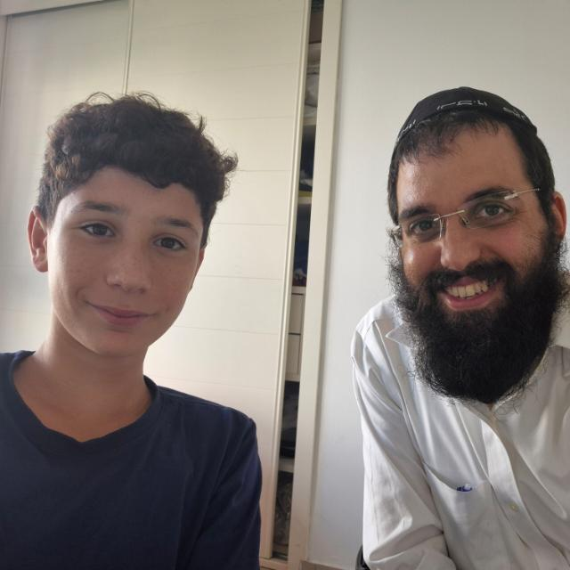

"הוא העניק לו ביטחון, תחושת מסוגלות ובעיקר חוויה חיובית ומשמחת"
משפחת וולדמן
אנחנו רוצים להמליץ מכל הלב על הרב אלישע קצבי, שליווה והכין את בננו לקראת בר המצווה.
בזמן קצר הצליח אלישע לעשות עבודה פשוט מדהימה! הוא הכין את הבן שלנו בצורה מקצועית, יסודית ומעוררת הערכה, אבל מעבר ללימוד עצמו, הוא העניק לו ביטחון, תחושת מסוגלות ובעיקר חוויה חיובית ומשמחת.
באירוע עצמו הוא היה פשוט נהדר, הכניס המון שמחה, אנרגיה ואווירה טובה, והפך את הרגע המיוחד הזה לחוויה בלתי נשכחת עבור כולנו.
ומה שהכי מרגש הוא שגם אחרי שהאירוע הסתיים, אלישע ממשיך לשמור על קשר עם הבן שלנו. זה בעינינו אומר הכול על האדם שהוא ועל החיבור המיוחד שהוא יודע ליצור עם ילדים.
אלישע, תודה על הלב הרחב, הסבלנות, המקצועיות והנתינה האינסופית. זכינו בך, ואנחנו ממליצים עליך בחום ובאהבה לכל משפחה שמחפשת ליווי משמעותי ומיוחד לקראת בר המצווה!